자동 확정 83 · 등급 다름 17 · Claude에만 18 · Gemini에만 23
판정할 것: 등급 다름(필수/허용), 한쪽에만 있는 소리원(넣기/빼기). 같은 위치인데 다른 이름으로 나뉜 경우도 여기서 합쳐 주세요.
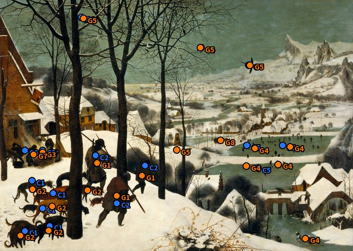
자동 확정 7개: 사냥개 발소리와 헐떡임, 사냥꾼의 눈 밟는 발소리, 모닥불 타는 소리, 까마귀 울음, 스케이트 날과 아이들 웃음, 모닥불 곁 사람들 소리, 겨울바람
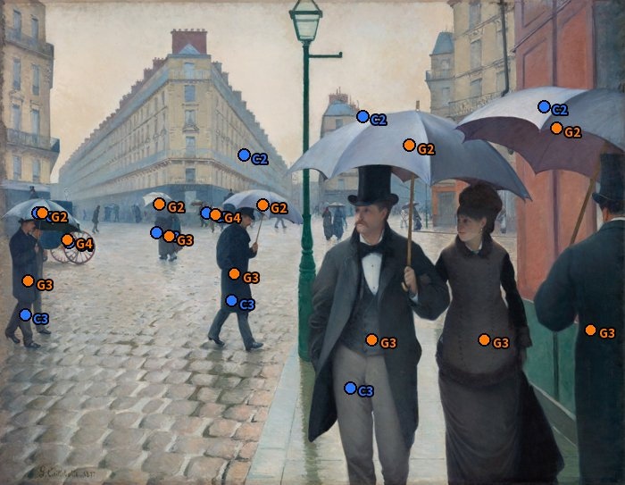
자동 확정 3개: 빗소리, 우산에 떨어지는 빗방울, 젖은 돌길 발소리
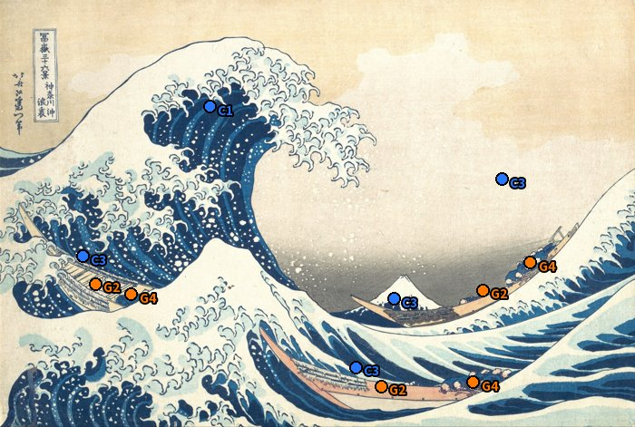
자동 확정 3개: 거대한 파도 부서지는 소리, 거친 바다, 바닷바람
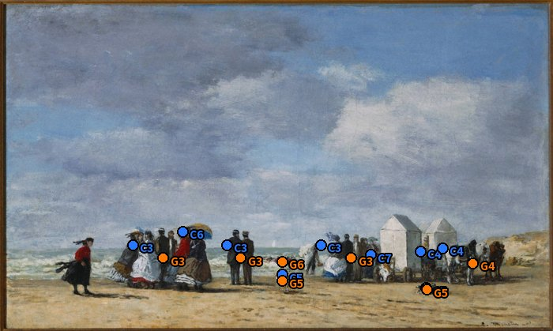
자동 확정 5개: 파도 소리, 바닷바람, 해변 사람들의 대화, 말 울음과 말발굽, 개 짖는 소리
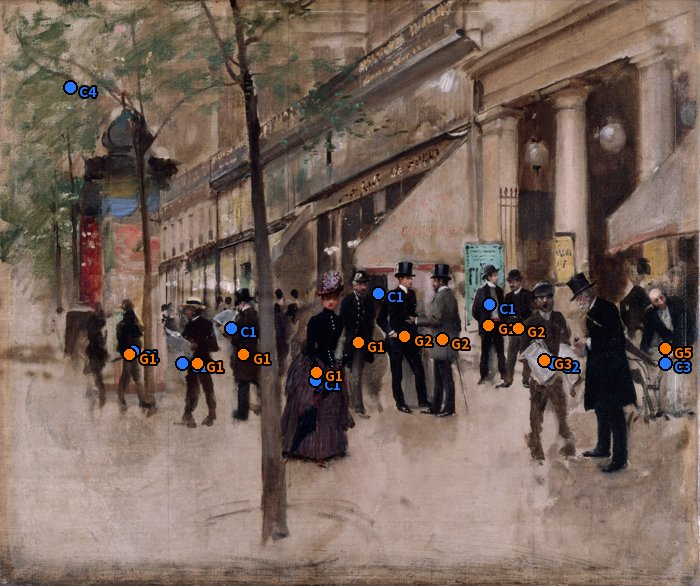
자동 확정 2개: 신문팔이 외침, 자전거 소리
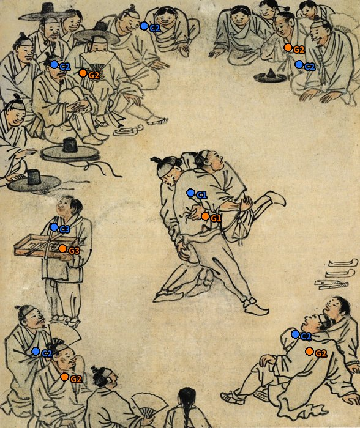
자동 확정 3개: 씨름꾼 몸싸움과 기합, 구경꾼 환호와 웃음, 엿장수 외침
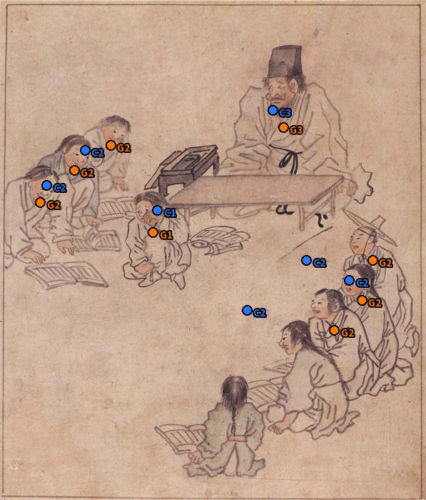
자동 확정 3개: 훈장에게 혼난 아이의 훌쩍임, 아이들의 킥킥 웃음, 훈장의 말소리
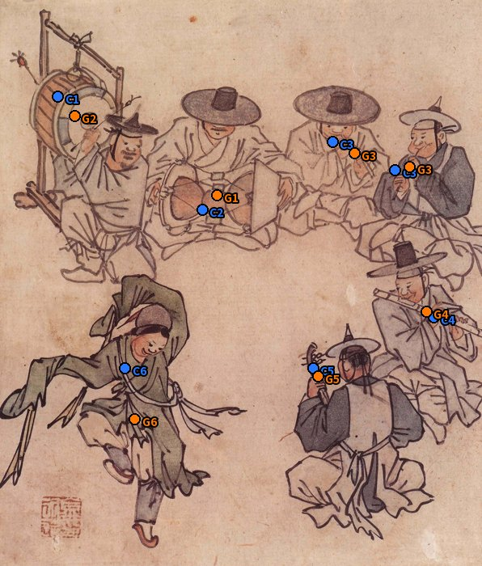
자동 확정 6개: 북 소리, 장구 소리, 피리 소리, 대금 소리, 해금 소리, 춤추는 아이의 소매 휘날림과 발 구름
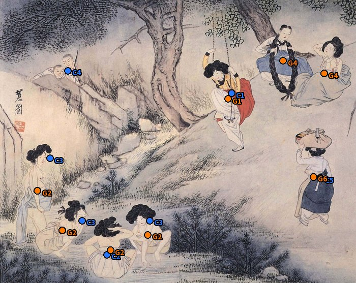
자동 확정 5개: 그네 삐걱임, 개울물 소리, 여인들의 웃음과 물장구, 보따리 이고 가는 발소리, 나뭇잎 바람
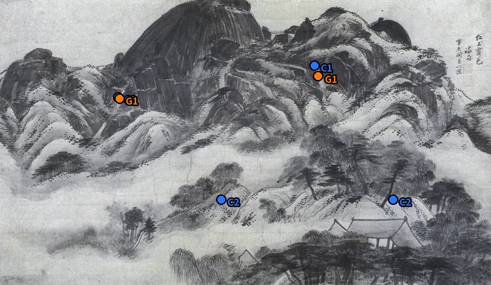
자동 확정 0개:
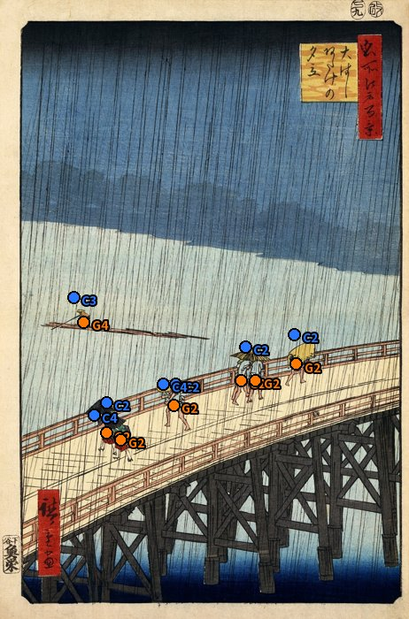
자동 확정 3개: 소나기 빗소리, 다리 위를 뛰는 발소리, 강물 흐르는 소리
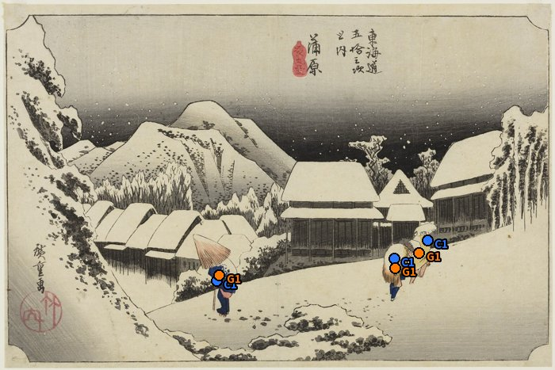
자동 확정 2개: 눈 밟는 발소리, 고요한 눈 내리는 밤
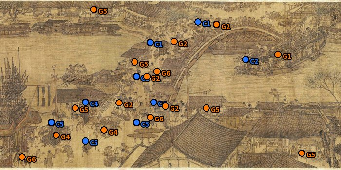
자동 확정 3개: 다리 위 군중의 웅성임, 다리 밑 배의 사공들 외침, 강물 소리
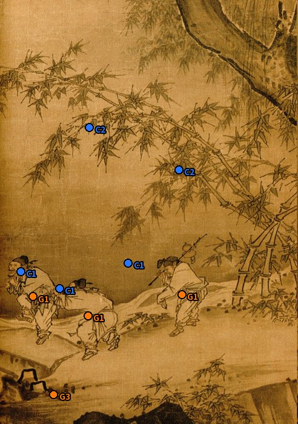
자동 확정 2개: 농부들의 노래·웃음과 발 구르기, 대나무 잎 바람
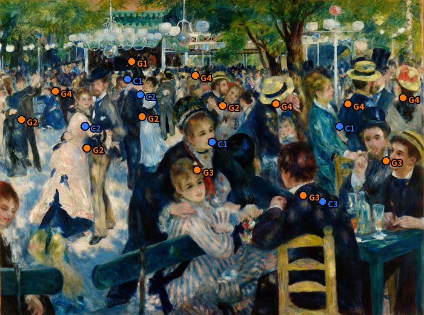
자동 확정 3개: 사람들의 대화와 웃음, 춤추는 발소리, 잔 부딪히는 소리
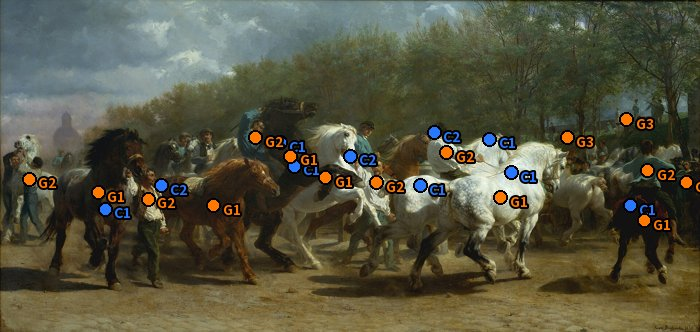
자동 확정 3개: 말발굽과 말 울음, 마부들의 고함, 장터 사람들 웅성임
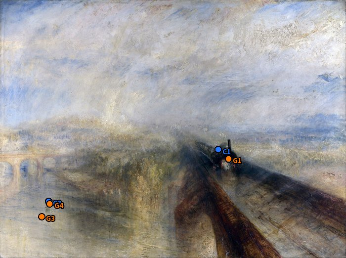
자동 확정 3개: 증기기관차 소리와 기적, 비바람, 강 위 작은 배
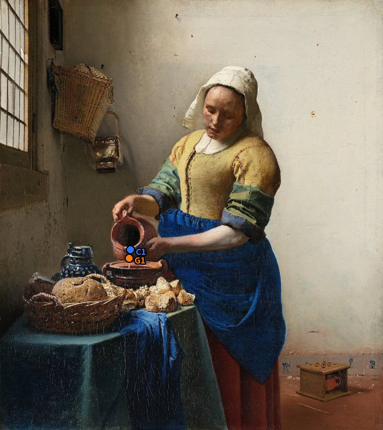
자동 확정 1개: 우유 따르는 소리
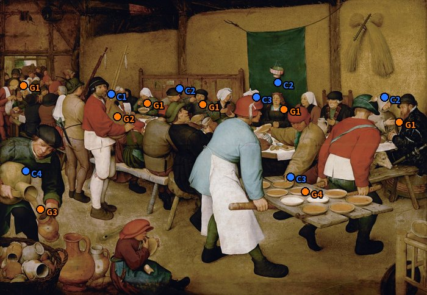
자동 확정 2개: 잔치 사람들의 대화와 웃음, 술 따르는 소리
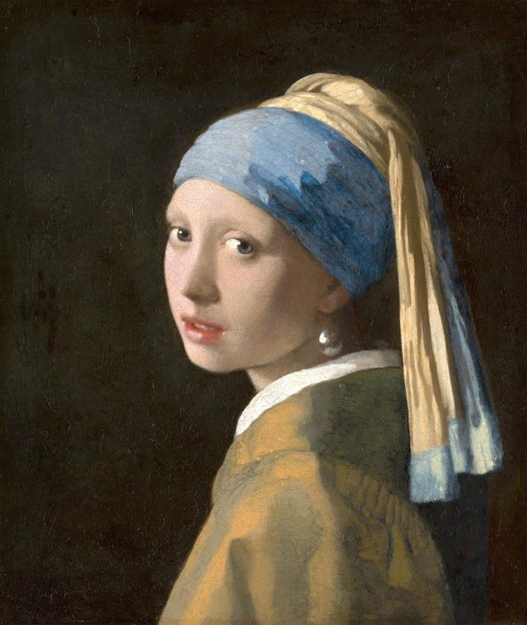
자동 확정 0개:
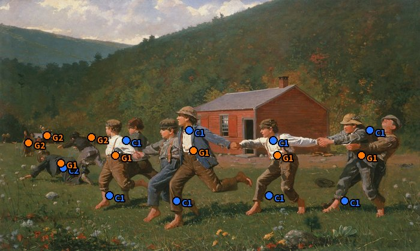
자동 확정 2개: 아이들 함성과 달리는 발소리, 산골 바람과 새소리
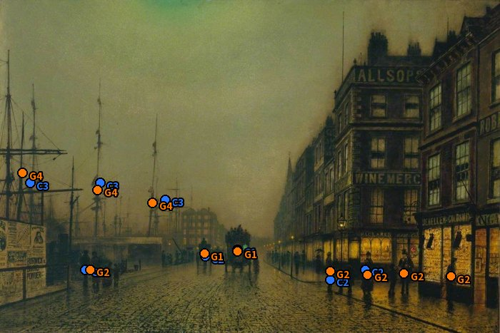
자동 확정 2개: 마차 바퀴와 말발굽, 젖은 보도의 발소리
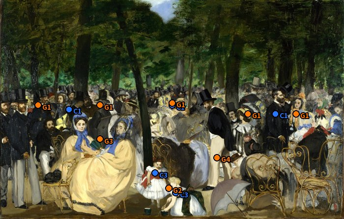
자동 확정 2개: 공원의 사람들 대화, 나뭇잎 바람
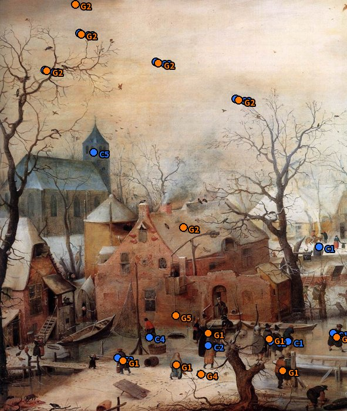
자동 확정 3개: 스케이트와 얼음 소리, 새소리, 얼음 구멍에서 물 긷는 소리
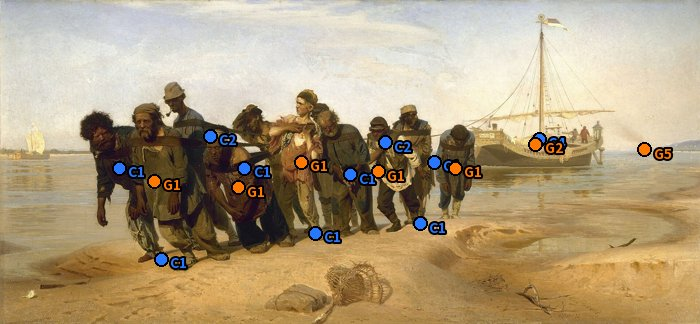
자동 확정 2개: 인부들의 신음과 무거운 발소리, 강물과 바람
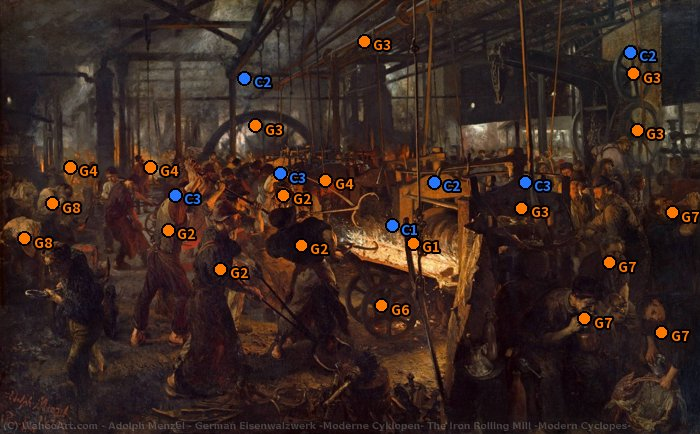
자동 확정 3개: 달군 쇠를 끄는 금속 소리와 지글거림, 기계 바퀴와 압연기 굉음, 노동자들의 고함
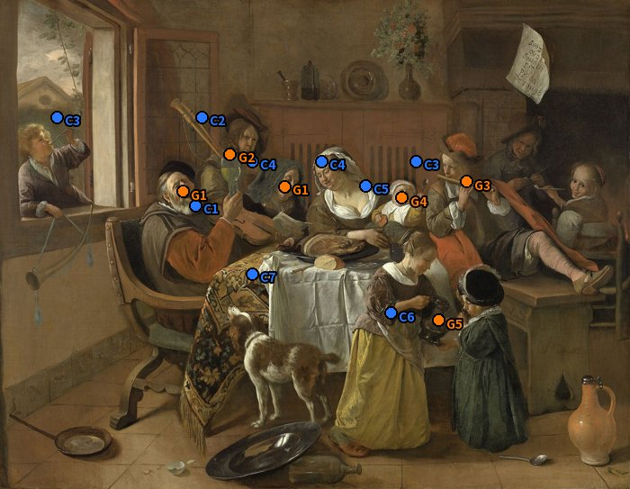
자동 확정 5개: 바이올린 연주, 피리 부는 아이들, 가족의 노래, 아기 소리, 술 따르는 소리
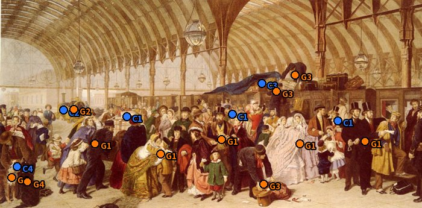
자동 확정 3개: 역 군중의 웅성임, 증기기관차, 개 짖는 소리
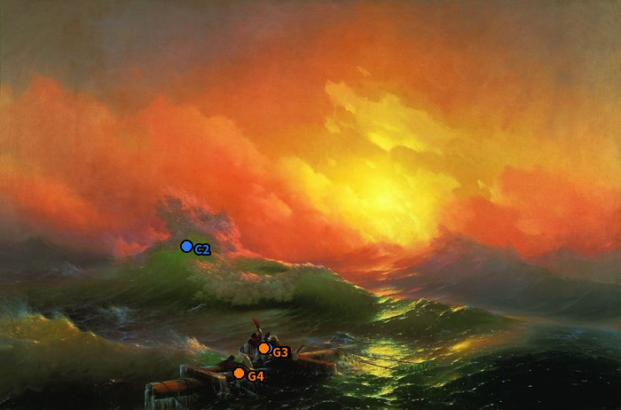
자동 확정 2개: 폭풍 바다, 난파된 사람들의 외침
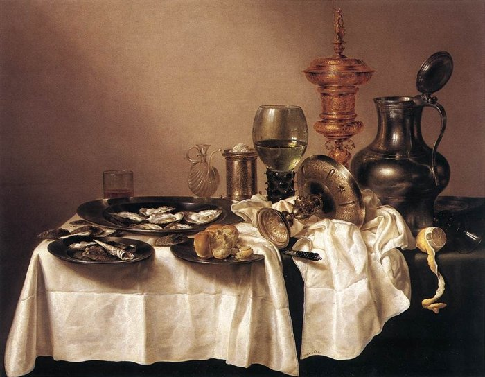
자동 확정 0개: